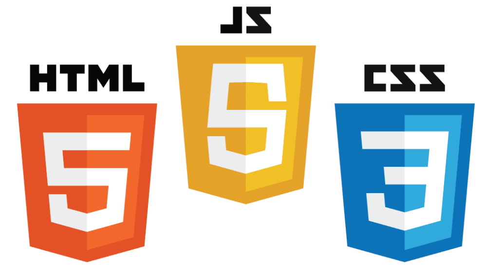

网站前端
前端技术一般分为前端设计和前端开发，前端设计一般可以理解为网站的视觉设计，前端开发则是网站的前台代码实现，包括基本的HTML和CSS以及JavaScript/ajax，最新的高级版本HTML5、CSS3，以及SVG等。
HTML
指的是超文本标记语言 (Hyper Text Markup Language)，这个也是我们网页最常用普通的语言了，经历了多个版本的发展，已经发展到5.0版了，得力于W3C建立的标准和规范，已普遍升级到了XHTML，XHTML
指可扩展超文本标签语言（EXtensible HyperText Markup Language）， XHTML 于2000年的1月26日成为 W3C 标准，是更严格更纯净的 HTML 代码，XHTML 的目标是取代
HTML。XHTML 与 HTML 4.01 几乎是相同的，XHTML 是作为一种 XML 应用被重新定义的 HTML，是一个 W3C 标准。W3C 将 XHTML 定义为最新的HTML版本。所有新的浏览器都支持 XHTML。
CSS

级联样式表（Cascading Style Sheet）简称“CSS”，通常又称为“风格样式表（Style
Sheet）”，它是用来进行网页风格设计的。比如，如果想让链接字未点击时是蓝色的，当鼠标移上去后字变成红色的且有下划线，这就是一种风格。通过设立样式表，可以统一地控制HTML中各标志的显示属性。级联样式表可以使人更能有效地控制网页外观。使用级联样式表，可以扩充精确指定网页元素位置，外观以及创建特殊效果的能力。
JavaScript

是一种由Netscape的LiveScript发展而来的原型化继承的面向对象的动态类型的区分大小写的客户端脚本语言，主要目的是为了解决服务器端语言，比如Perl，遗留的速度问题，为客户提供更流畅的浏览效果。当时服务端需要对数据进行验证，由于网络速度相当缓慢，只有28.8kbps，验证步骤浪费的时间太多。于是Netscape的浏览器Navigator加入了Javascript，提供了数据验证的基本功能。